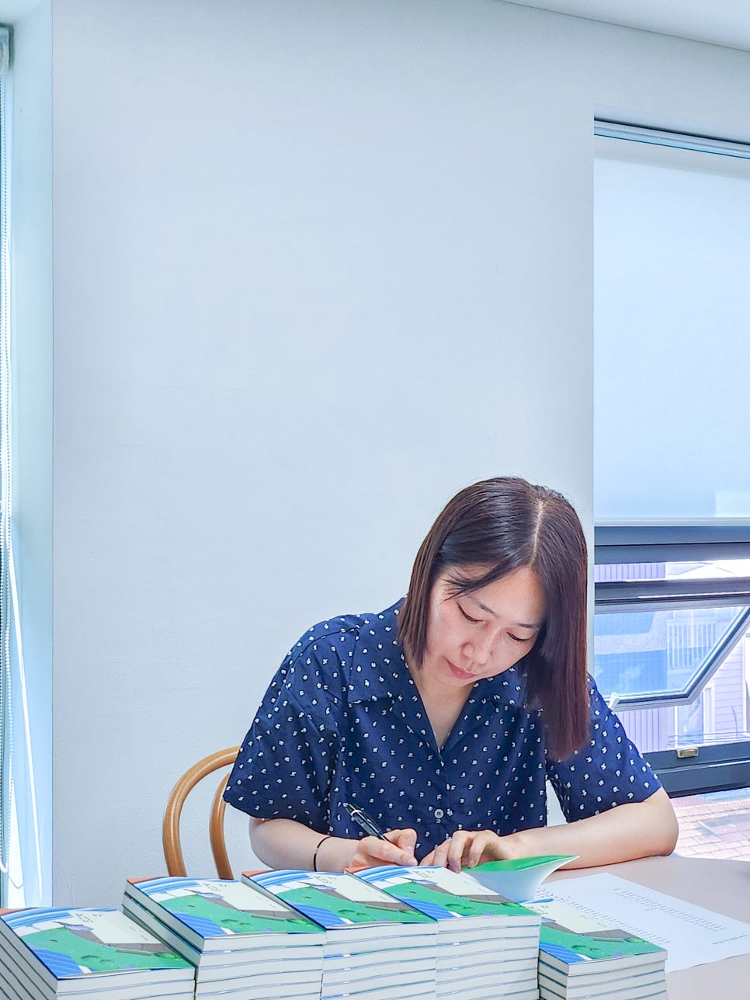
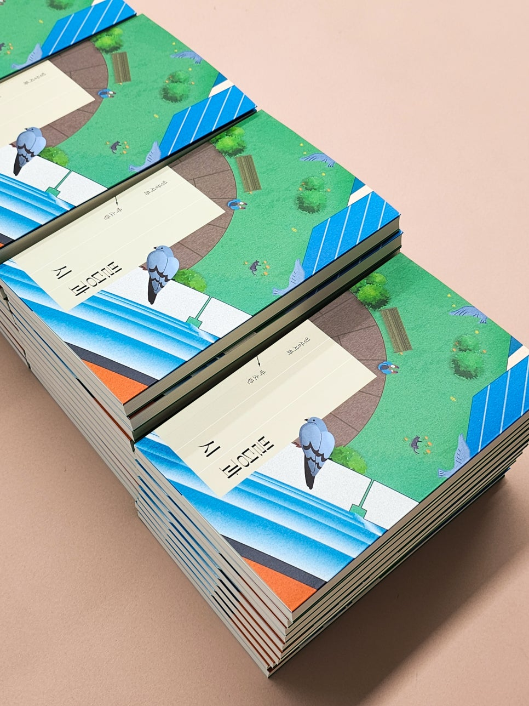
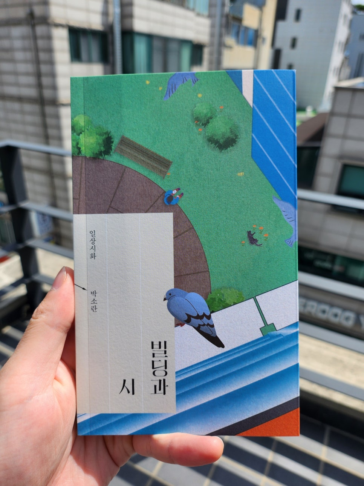
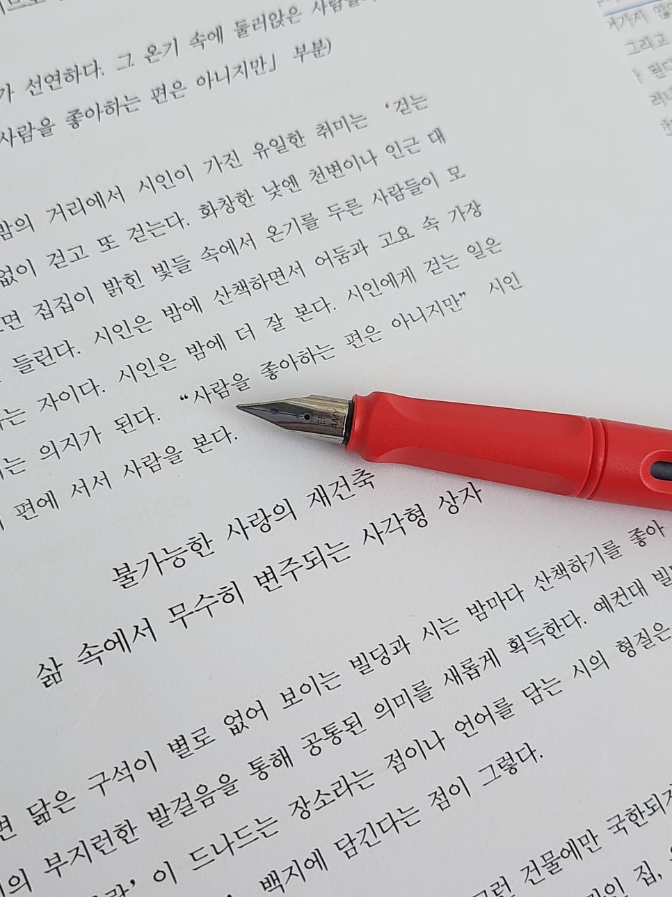
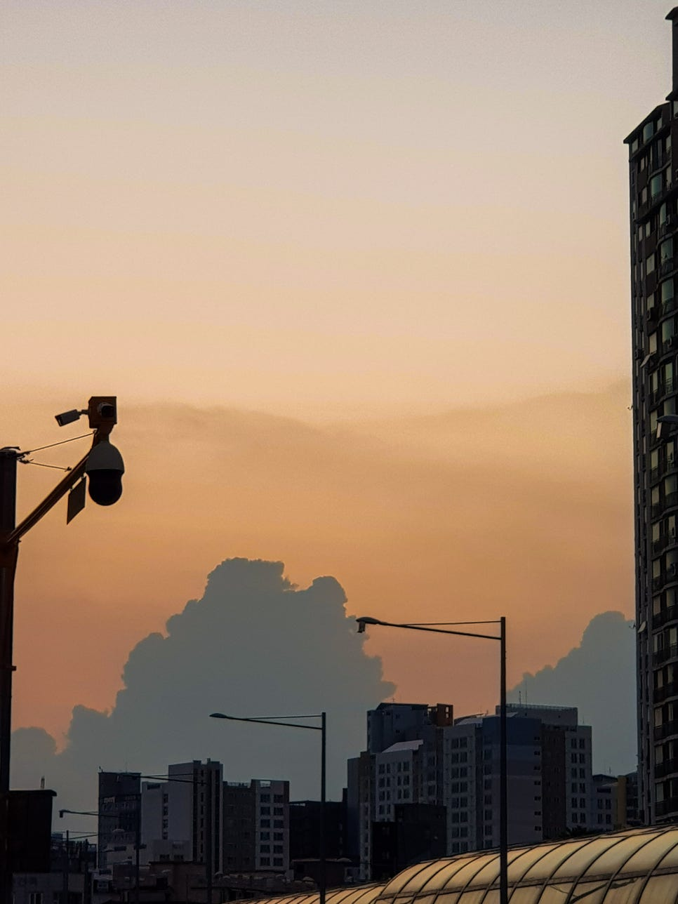

편집자 노트 『빌딩과 시』
2018년 봄, 그때의 나는 대학교를 갓 졸업했으나 다음 목적지를 정하지 못하고 갈팡질팡 거리를 헤매고 있었다. 대학교라는 작은 사회에서 만난 사람들과 공동체를 이루어 지냈던 날들은 아름다웠지만 울타리를 조금만 벗어났을 뿐인데 바깥은 봄이어도 살갗을 에는 바람이 불었다. 그동안 내가 캠퍼스 안에서 여러 건물을 드나들며 공부했던 시절은 품 안의 자식처럼 길러진 시간이었구나. 이제 나에게는 얼마간 주어지는 수업도 과제도 없다. 도서관도 알아서 찾아다녀야 하고 나와 고민을 함께 나눌 동료도 없다.
내가 주로 걷는 길에는 언제나 가지런히 자란 나무들이 계절마다 새로운 꽃과 잎을 풍성하게 보여주어 다채로운 풍경을 선물했는데. 대학 건물에서 우르르 빠져나오는 학생들이 까르르 웃는 소리가 듣기 좋아 벤치에 반대로 앉아 등받이 위에 양팔을 올려 한쪽 뺨을 대고 그 소리를 가만히 듣기도 했는데. 그럴 때면 꼭 달큼한 바람이 불었는데.
이제는 길을 걷다 무심코 주변을 돌아보면 그런 풍경을 만나기가 어렵다. 대신 금방이라도 내 숨을 조일 듯 웅장한 높이로 빼곡 들어찬 빌딩들이 사방에 있다. 정오가 지나면 그 빌딩 속에서 하나둘 무리를 지으며 나오는 사람들. 목에 저마다 사원증을 메고 있기도 하고. 한 손에는 휴대폰과 지갑, 한 손에는 커피를 들고 컨베이어 벨트 위 공산품처럼 주변을 산책하기도 하고. 저기 어딘가 구석에서는 몇 명 모여 담배에 불을 붙이기도 하는. 그런 모습들이 내겐 익숙해지고 있다. 마치 졸업만 하면 무엇이든 할 수 있을 거라고 생각했던 내가 정작 자유를 얻게 되자 손에서 그것을 한참 굴리다가 당장 어디든지 반납해버리고 싶은 마음이 들듯. 그렇게 반납한 마음들이 모여 어떤 빌딩의 골조를 이루게 되면 거기에 누구라도 들어가고 싶듯. 무슨 일이든지 일단 하면서 돈이라도 벌어야 한다고. 그렇지만 돈을 벌면 그다음엔 무엇을 해야 하는지는 여전히 모르는 채로 오늘도 빌딩 속을 드나드는 사람들.
어쩌면 이것은 우리가 살아가는 모습을 가장 잘 설명해주는 평범한 이야기. 그러나 결코 이 굴레 속에서 자유로울 사람이 얼마나 있을지 되묻게 되는 이야기.
도시를 호위하는 빌딩 사이사이를 가로지르며, 거리를 헤매던 그 봄에, 시인을 알게 된 건 우연이었다. 어느 날, 밤에 강을 바라보다가 시인이 말했다.
“저게 뭐라고 다들 이렇게 열심히 쳐다보고 있는 걸까요.”
주변에서 각자의 자리에 앉으며 단란한 대화를 나누고 있는 친구들과 연인들. 블루투스 스피커에는 밤에 어울리는 노래가 잔잔하게 흘러나오고 있었고. 모두들 한밤의 강물을 바라보고 있었다.
그날 이후 나는 시인이 혼잣말처럼 뱉었던 말을 마음속에 오래오래 품었다. 이유는 없었지만. 이상했지만.
시간이 흘러 올해 나는 편집자가 되었지만 아직 내가 만든 책은 없었기 때문에 어디 가서 편집자라고 말하지는 않았다. 그러다가 일상시화 시리즈에서 나올 박소란 시인의 책을 첫 담당 편집으로 맡게 되었다. 몇 년 만에 시인을 다시 만나게 된 것이다. 무엇보다 이 만남은 글로 만나는 순간이었기에 내겐 더욱 특별했다.
박소란 시인은 글에서 열심히 걷고 있었다. 다양한 크기와 의미로 변주되는 사각형 빌딩들을 드나들고, 거리를 헤집으며, 도시 한가운데에서 멈춰 어딘가를 응시했다. 그 응시의 시선은 너무 멀리까지 가고 있어서 때론 아무도 짐작할 수 없는 세계라고 여기는 편이 나을 정도였다. 예전에도 잠깐 보았던 모습이 그랬던 것 같다. 시인은 많이 걷고, 멈추고, 바라보는 사람이었다. 시인은 멈추기 위해 걷고, 바라보기 위해 걷는 사람이었다.
또 시인은 문장에서 ‘쉼표’를 자주 쓴다. 문장을 이어나가다가 중간, 그 어딘가쯤에서. 바로, 이렇게. 이는 시인이 그동안 우리에게 보여주었던 기질과도 닮은 듯하다. 시인 박소란은 그냥 넘겨짚는 법이 없으니까. 확신하고 단언할 수 있더라도 곧장 말하는 법이 없으니까. 아마 시인의 문장을 읽으면서 우리는 자주 멈추게 될 것이다. 그 멈춤은 단순한 정지 상태가 아니라, 무언가를 보게끔 만드는 시선에 시야를 넓힐 것이다. 쉼표로 짚는 호흡은 일종의 산책하는 리듬이다. 만약 빌딩이 하늘 방향으로 솟은 문장이라면, 그 속에서 열심히 움직이고 있는 우리는 저마다 문장을 구성하는 요소, 그러니까 리듬이고 호흡이고 쉼표가 아닐까.
이 책은 내게 비로소 편집자 정체성을 심어준 책이다. 또한 박소란 시인의 첫 산문집이다. 우리의 처음은 각기 다른 의미를 가지고 있지만 함께 만든 처음이었기에 이 도시 속에서 조금 덜 외로울 수 있었던 것 같다. 대학교를 졸업하고 나와 마주했던 세상이 두려웠던 그해 봄을 지나 여기까지 올 수 있었던 건 끝내 글과 헤어지지 않기를 택했기 때문이었다. 여전히 세상은 내게 크고 복잡하고 어렵기만 하지만 앞으로도 빌딩에서 만날 사람들과 펼칠 꿈을 기대하면서 그렇게 이 도시를 먹먹한 심정으로 살아가고 싶다. 세상에 비하면 빌딩은 작디작은 구조물에 불과하지만, 한 대학생이 저녁이 무르익은 빌딩 속 도서관에서 시집을 읽고 시를 노트에 옮기며 문학을 꿈꾸었듯, 꿈의 크기와 반비례하는 공간에서 우리는 이미 이 세상보다 더 거대한 삶을 살고 있다는 것을. 나는 이 책에서 배울 수 있었다.
나는 어제보다 오늘 조금 더 지었고, 조금 더 견뎠고, 조금 더 썼고,
쓴 것들은 곧잘 지워져버리지만. 익숙한 자음과 모음,
철자들은 막무가내로 쏟아지고. 하는 수 없다는 듯
나는 또
쓰고, 쓰고, 쓰고.
「more games, more」 부분

서명 중인 박소란 시인

빌딩과 시(Feat. 비둘기)

책 나왔을 때!

책 소개... 다들 읽으시죠?

빌딩의 세계